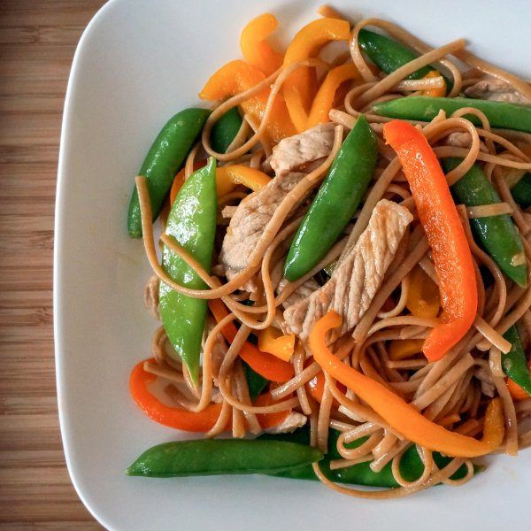

Pork Lo Mein with Bell Pepper & Sugar Snap Peas

Prep Time
40 min
Nutrition (per serving)
779 kcalCalories
47.4 gProtein
80.8 gCarbs
29.8 gFat
Full nutrition table
| Calories | 779 kcal |
| Total fat | 29.8 g |
| Saturated fat | 13 g |
| Trans fat | 0.1 g |
| Cholesterol | 85.6 mg |
| Sodium | 132.3 mg |
| Carbohydrates | 80.8 g |
| Fiber | 6.6 g |
| Sugars | 10.8 g |
| Protein | 47.4 g |
| Potassium | 1153.7 mg |
| Calcium | 101.7 mg |
| Iron | 6.5 mg |
| Vitamin A | 208.6 IU |
| Vitamin C | 178.9 mg |
| Vitamin D | 16 IU |
Cookware
Ingredients
- 6 clovesgarlic
- 2 (1 inch) piecesginger root
- 12 ozlinguine pasta
- 2orange bell peppers
- 4pork chops, boneless
- 2 (8 oz) pkgsugar snap peas
- cornstarch
- crushed red pepper
- honey
- rice vinegar
- salt
- soy sauce
- toasted sesame oil
- virgin coconut oil
Steps
- Fill a large pot halfway with water, cover, and bring to a boil. Uncover, add salt and pasta, and stir for a few seconds. Cook until desired firmness, 8-10 minutes.about 14 cups water
2 tbsp salt
12 oz (1 quarter coin = 2 oz) linguine pasta - In a medium bowl, whisk together soy sauce, vinegar, sesame oil, cornstarch, honey, and crushed red pepper. Set aside.4 tbsp soy sauce
2 tbsp rice vinegar
2 tsp toasted sesame oil
2 tsp cornstarch
½ tsp honey
¼ tsp crushed red pepper - Thinly slice pork crosswise into strips; transfer to a small bowl.4 pork chops, boneless
- Heat a skillet over medium-high heat.
- Peel and mince garlic. Peel and mince or grate ginger.6 cloves garlic
2 (1 inch) pieces ginger root - Wash peas and bell peppers. Seed and slice the peppers into strips.2 (8 oz) pkg sugar snap peas
2 orange bell peppers - Coat bottom of skillet with oil. Add pork and stir fry until no longer pink, 2-3 minutes. Transfer to a plate.1 tbsp virgin coconut oil
- Once pork has been transferred, coat skillet with more oil. Add garlic, ginger, peas, and peppers; stir fry until peas are bright green and peppers are tender-crisp, 2-3 minutes.1 tbsp virgin coconut oil
- Drain pasta in a colander.
- Add pork, pasta, and sauce to skillet. Toss until noodles are well coated and sauce thickens, 1-2 minutes.
- To serve, place lo mein on a plate and enjoy!